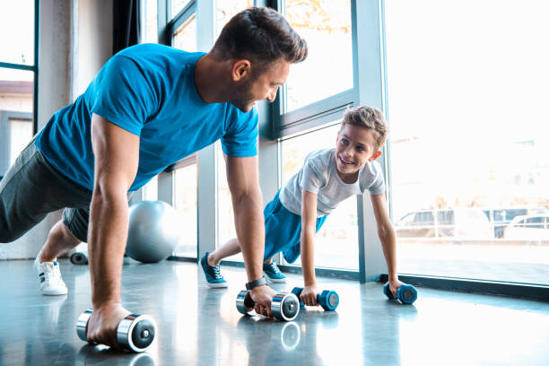

Una alimentación equilibrada y actividad física regular son los dos principales pilares sobre los que se sustenta una vida saludable, algo que explicamos en nuestro manifiesto. Hay muchas formas de mantener nuestro cuerpo activo y mejorar nuestra salud y, sin duda, ir al gimnasio es una de las más populares. Para los neófitos, entrar por primera vez en esa sala llena de máquinas y artilugios puede ser todo un choque. La vergüenza y el desconocimiento puede hacer que no sepamos por donde empezar ni a qué atenernos, es por eso que desde el blog de Welthy queremos darte una serie de consejos y trucos a tener en cuenta sobre cómo empezar en el gimnasio.

lo aconsejable es que el desayuno incluya un alimento rico en carbohidratos de asimilación media o lenta